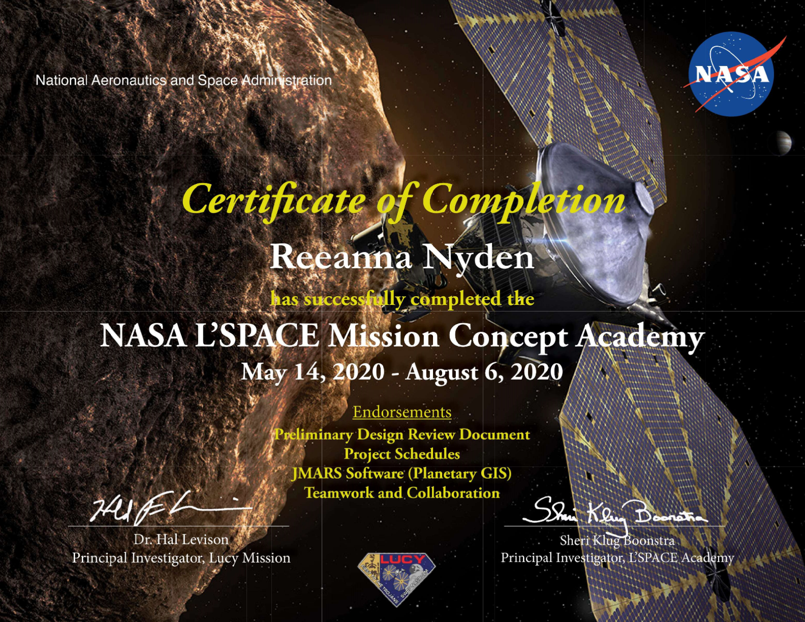
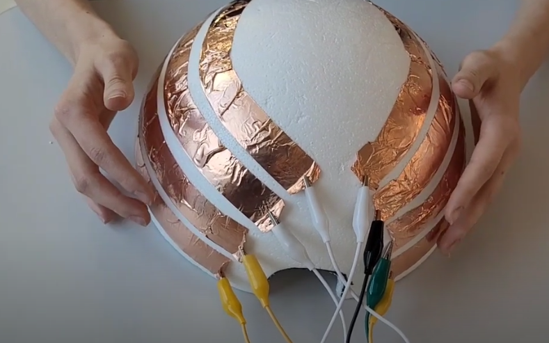
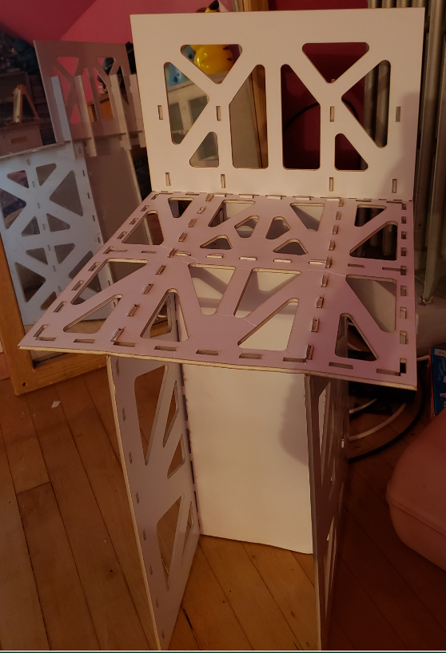

Bachelor of Science in Mechanical Engineering: August 2018 - May 2022
Coursework included Chemistry I, Calculus II, Multivariate and Vector Calculus, Introduction to Differential Equations, Physics II, Introduction to Cyber Security, Computational Mechanics, Mechanical Lab II,
Materials Science, Statics, Advanced Mechanics of Solids, Dynamics, Fluid Mechanics, Applied Thermodynamics, Heat and Mass Transfer, Design of Machine Elements, Computer-Aided Design, Design for Innovation,
Systems Analysis and Control, Manufacturing Processes, AP: Robots, Songs of Justice and Injustice, Global Health, Survey Methods, Industrial Psychology, Magical Realism, General Learning Strategies I,
Fundamentals of Game Design, and History of Video Games
Recipient of merit-based Heald Scholarship
Experience
SHINYA RAMEN HOUSE: Chicago, IL
Server: August 2018 - PRESENT
Managed the servers when a manager was absent
Waited on customers
Made and served beverages to customers
Packed to-go food securely to be given to third-party delivery partners
Answered phone calls
Inputted to-go orders to be sent to the kitchen
Settled customer complaints
Cleaned tables, floors, windows, and cups
Consulted with third-party delivery partners if any related issues arose
Opened up and locked up the restaurant at the beginning and end of the day
Restocked beverages, beverage ingredients, some desserts, napkins, etc.
Counted and recorded cash in drawer and tips at the end of the shift
NATIONAL AERONAUTICS AND SPACE ADMINISTRATION: Online
L’SPACE Mission Concept Academy student: May 2020 - August 2020

This video shows what L'Space involves.
Collaborated on a team of five people to write a preliminary design review
Utilized ProjectLibre to create a project schedule
Projects
MOCHIPHON - Musical Instrument: August 2021 - PRESENT

Designed a new musical instrument that is ideal for users with limited hand mobility
Collaborated in a team of four people
Pitched and presented this idea on multiple occasions
Prototyped and reiterated the design process to improve the product
Researched previous solutions, hand mobility issues, other instruments, etc.
Won a prize at Innovation Day
OPERATION CIRCUS - Escape Room: June 2021 - May 2021
Designed the set-up of the room
Managed the building portion of the room set up
Staffed the room during hours of operation
Collaborated in a team of 18 people
FOAM BOARD CHAIR - an assignment: Fall 2019

Designed a chair using Autodesk Inventor
Prototyped the chair using only foam board and a laser cutter
Designed based on given dimension restrictions and a minimum holding weight of 150 lb
COSMIC RAY RESEARCH - conducted at De La Salle Institute: Summer 2017
Collaborated in a team of five people
Built a cosmic ray detector
Researched muons, photons, theory of special relativity, etc.